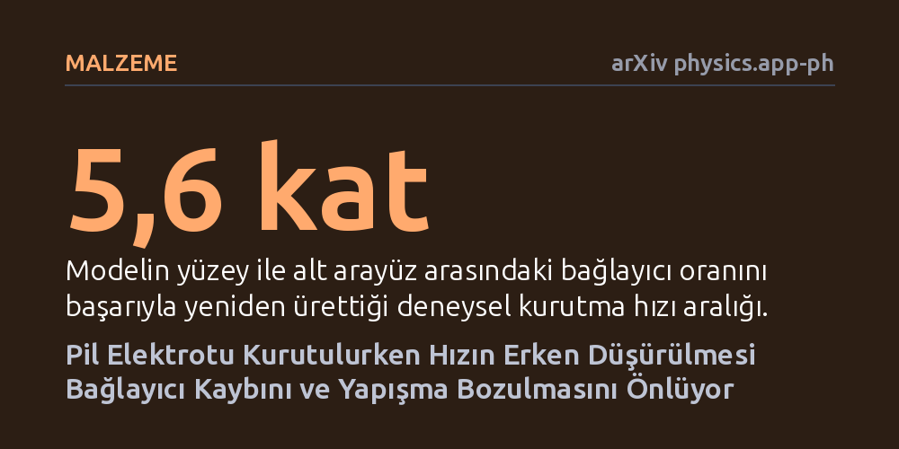

MALZEME · arXiv physics.app-ph · 2026-10-23
Pil elektrotlarının kurutulmasında yapışmayı zayıflatan bağlayıcı göçünü iki aşamada kesintisiz izleyen yeni bir fiziksel simülasyon geliştirildi. Model, kurutma hızının erken evrede düşürülmesinin metal folyoya yapışmayı tamamen korurken kurutma süresini de kısalttığını ortaya koydu.
Elektrikli araç bataryalarının üretiminde en yüksek enerji maliyetine sahip fırınlama adımının, pil kalitesini düşürmeden nasıl hızlandırılabileceğini gösteriyor.

Elektrikli araçların ve enerji depolama sistemlerinin yaygınlaşması, lityum iyon pillerin üretim hızını ve maliyetini sanayinin en kritik rekabet alanlarından biri haline getirdi. Bir batarya hücresi üretilirken en çok enerji tüketen ve üretim hattını en çok yavaşlatan basamaklardan biri, metal folyoların üzerine ıslak bir harç halinde sıvanan elektrotların fırınlarda kurutulmasıdır. Fırınları sonuna kadar ısıtıp elektrotları çok hızlı kurutmak ilk bakışta büyük bir zaman ve enerji kazancı gibi görünür; ancak pratikte ciddi bir fiziksel engele çarpar.
Islak harç hızla kururken, sıvı çözücü yukarı doğru buharlaşır ve harcın içinde çözünmüş haldeki polimer yapıştırıcıyı (bağlayıcıyı) da beraberinde yüzeye doğru sürükler. Sonuçta kuruyan elektrotun üst yüzeyi gereksiz yere polimerle kaplanırken, alttaki metal akım toplayıcı folyo ile elektrot arasındaki temas yüzeyi yapıştırıcısız kalır. Yapıştırıcısı tükenen elektrot tabakası metalden pul pul dökülür; yani pilin mekanik dayanıklılığı çöker ve kullanım ömrü hızla tükenir.
Mühendisler kurutma fırınlarındaki sıcaklık ve hava akışını kademeli olarak ayarlayarak bu yapıştırıcı göçünü dizginlemeye çalışır. Fakat bugüne kadar kullanılan bilgisayar modelleri bu süreci eksik canlandırıyordu. Bir elektrotun kuruması temel olarak iki evrede gerçekleşir: İlk evrede sıvı buharlaştıkça parçacıklar birbirine yaklaşır ve film büzülür (film sıkışması); ikinci evrede ise parçacıklar birbirine kilitlenir ve sıvı gözeneklerin içinden çekilerek buharlaşır (gözenek boşalması).
Önceki simülasyon modelleri, bağlayıcı göçünü ya yalnızca birinci evrenin sonuna kadar takip edip bırakıyor ya da ikinci evreyi bağlayıcı hareketini tamamen dışlayarak veya tahmini bir dağılım varsayarak başlatıyordu. Bu çalışmada araştırmacılar, her iki evreyi kesintisiz şekilde birbirine bağlayan ilk sürekli taşınım simülasyonunu kurdu. Model, çözücünün bağlayıcıyı film sıkışırken nereye taşıdığını ve gözenekler boşalırken bağlayıcının tam olarak hangi anda hareket etmeyi bıraktığını etkin fiziksel denklemlerle tek bir çatı altında topladı.
Araştırmacılar geliştirdikleri modeli literatürdeki bağımsız deney verileriyle sınadı. Simülasyon, tek bir parametre kümesi kullanarak kurutma hızının 5,6 kat değiştiği deneylerdeki yüzey-taban bağlayıcı oranlarını ve 6 kat daha kalın filmlerdeki bağlayıcı dağılımını birebir yeniden üretmeyi başardı. Ayrıca elektrotun iç derinliği boyunca bağlayıcı yoğunluk profilini ve kurutma hızının süreç ortasında değiştirilmesine arayüzün verdiği tepkiyi doğru öngördü.
Modelin en çarpıcı bulgusu üç aşamalı bir kurutma takvimine uygulandığında ortaya çıktı. Simülasyon, kurutma hızının sürecin henüz başındayken düşürülmesinin, metal folyo arayüzündeki bağlayıcı kaybını tamamen telafi ettiğini gösterdi. Dahası model, kurutma takviminin sonundaki yüksek hızlı fırınlama aşamasının ancak bağlayıcı hareketi tamamen durduktan sonra başladığını ortaya koydu. Yani polimer yapıştırıcı bir kez yerine kilitlendikten sonra sıcaklığı ve kurutma hızını en üst seviyeye çıkarmak yapışmaya hiçbir zarar vermiyor.
Bu bulgular, batarya üretiminde hız ile kalite arasında mutlak bir fedakarlık yapmak zorunda olunmadığını gösteriyor. Sürecin başında bağlayıcının dipte kalmasını sağlayacak ılımlı bir kurutma hızı seçildiğinde ve bağlayıcı hareketi durur durmaz fırınlama hızı azami seviyeye çıkarıldığında, hem elektrotun metal folyoya kusursuz yapışması korunabiliyor hem de toplam kurutma süresi kısaltılabiliyor.
Araştırmacılar, geliştirdikleri bu sürekli modelin kaplama hattı ölçeğindeki fabrika süreç modelleriyle doğrudan birleştirilebileceğini belirtiyor. Böylece üreticiler pahalı deneme-yanılma süreçlerine girmeden, hem enerji faturasını düşüren hem de yüksek mekanik dayanıklılığa sahip piller üreten en uygun kurutma takvimlerini doğrudan bilgisayar ortamında hesaplayabilecek.